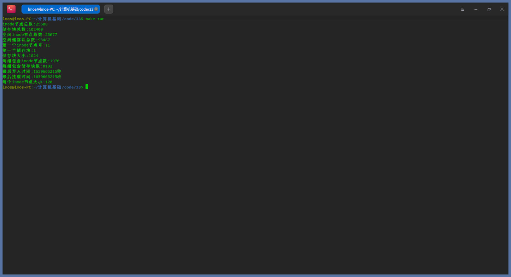
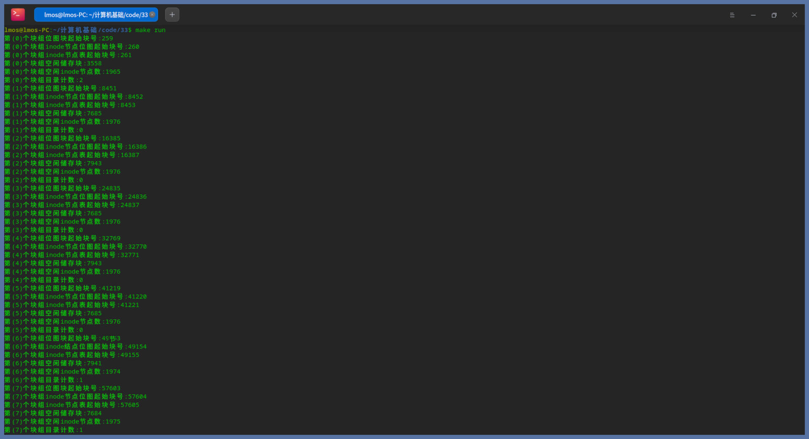
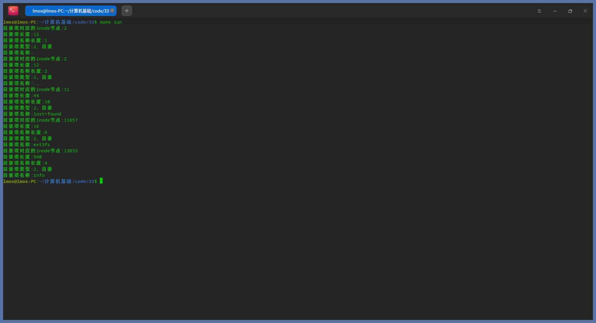
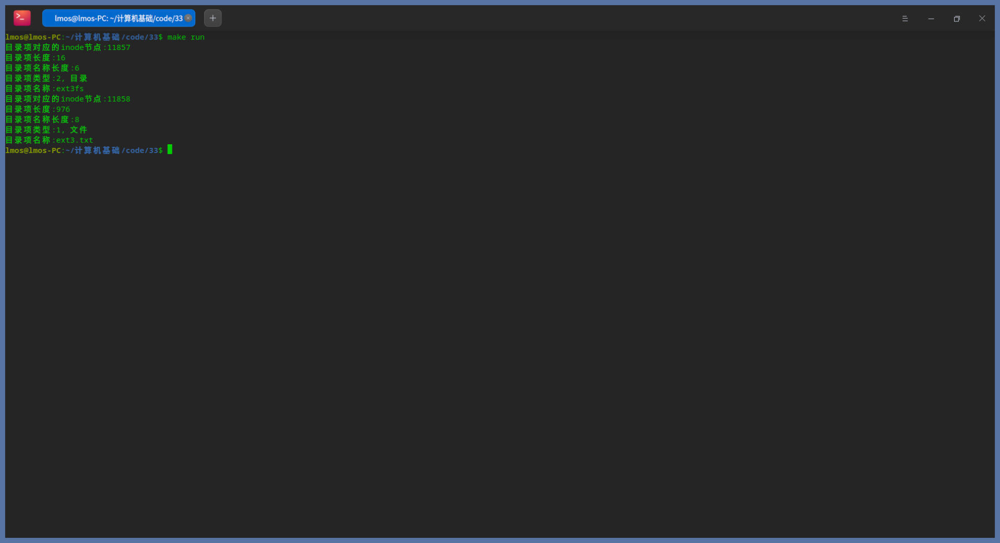
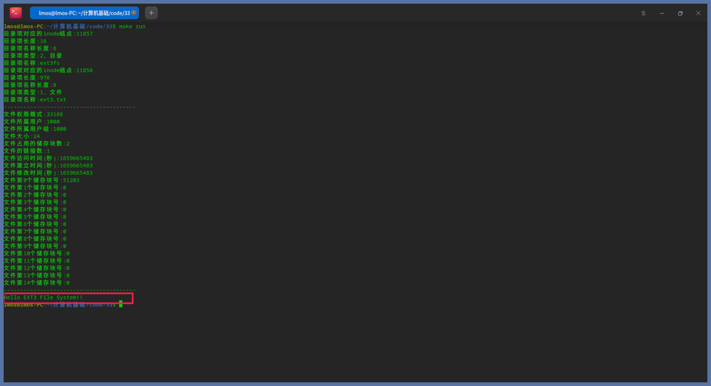
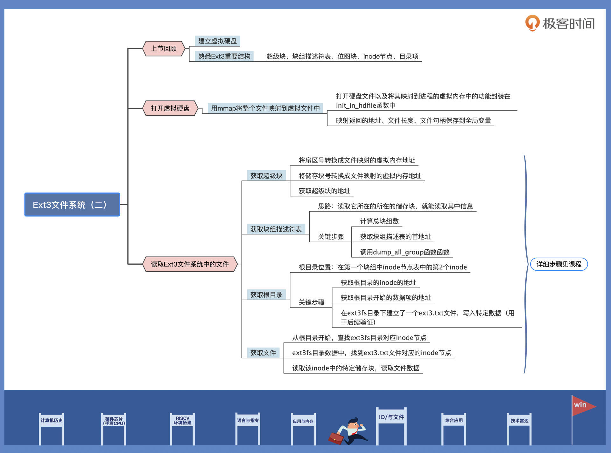

- 00 开篇词 练好基本功，优秀工程师成长第一步.md
- 01 CISC & RISC：从何而来，何至于此.md
- 02 RISC特性与发展：RISC-V凭什么成为“半导体行业的Linux”？.md
- 03 硬件语言筑基（一）：从硬件语言开启手写CPU之旅.md
- 04 硬件语言筑基（二）_ 代码是怎么生成具体电路的？.md
- 05 指令架构：RISC-V在CPU设计上到底有哪些优势？.md
- 06 手写CPU（一）：迷你CPU架构设计与取指令实现.md
- 07 手写CPU（二）：如何实现指令译码模块？.md
- 08 手写CPU（三）：如何实现指令执行模块？.md
- 09 手写CPU（四）：如何实现CPU流水线的访存阶段？.md
- 10 手写CPU（五）：CPU流水线的写回模块如何实现？.md
- 11 手写CPU（六）：如何让我们的CPU跑起来？.md
- 12 QEMU：支持RISC-V的QEMU如何构建？.md
- 13 小试牛刀：跑通RISC-V平台的Hello World程序.md
- 14 走进C语言：高级语言怎样抽象执行逻辑？.md
- 15 C与汇编：揭秘C语言编译器的“搬砖”日常.md
- 16 RISC-V指令精讲（一）：算术指令实现与调试.md
- 17 RISC-V指令精讲（二）：算术指令实现与调试.md
- 18 RISC-V指令精讲（三）：跳转指令实现与调试.md
- 19 RISC-V指令精讲（四）：跳转指令实现与调试.md
- 20 RISC-V指令精讲（五）：原子指令实现与调试.md
- 21 RISC-V指令精讲（六）：加载指令实现与调试.md
- 22 RISC-V指令精讲（七）：访存指令实现与调试.md
- 23 内存地址空间：程序中地址的三种产生方式.md
- 24 虚实结合：虚拟内存和物理内存.md
- 25 堆&栈：堆与栈的区别和应用.md
- 26 延迟分配：提高内存利用率的三种机制.md
- 27 应用内存管理：Linux的应用与内存管理.md
- 28 进程调度：应用为什么能并行执行？.md
- 29 应用间通信（一）：详解Linux进程IPC.md
- 30 应用间通信（二）：详解Linux进程IPC.md
- 31 外设通信：IO Cache与IO调度.md
- 32 IO管理：Linux如何管理多个外设？.md
- 33 lotop与lostat命令：聊聊命令背后的故事与工作原理.md
- 34 文件仓库：初识文件与文件系统.md
- 35 Linux文件系统（一）：Linux如何存放文件？.md
- 36 Linux文件系统（二）：Linux如何存放文件？.md
- 37 浏览器原理（一）：浏览器为什么要用多进程模型？.md
- 38 浏览器原理（二）：浏览器进程通信与网络渲染详解.md
- 39 源码解读：V8 执行 JS 代码的全过程.md
- 40 内功心法（一）：内核和后端通用的设计思想有哪些？.md
- 41 内功心法（二）：内核和后端通用的设计思想有哪些？.md
- 42 性能调优：性能调优工具eBPF和调优方法.md
- 先睹为快：迷你CPU项目效果演示.md
- 加餐01 云计算基础：自己动手搭建一款IAAS虚拟化平台.md
- 加餐02 学习攻略（一）：大数据&云计算，究竟怎么学？.md
- 加餐03 学习攻略（二）：大数据&云计算，究竟怎么学？.md
- 加餐04 谈谈容器云与和CaaS平台.md
- 加餐05 分布式微服务与智能SaaS.md
- 国庆策划01 知识挑战赛：检验一下学习成果吧！.md
- 国庆策划02 来自课代表的学习锦囊.md
- 国庆策划03 揭秘代码优化操作和栈保护机制.md
- 温故知新 思考题参考答案（一）.md
- 用户故事 我是怎样学习Verilog的？.md
- 结束语 心若有所向往，何惧道阻且长.md
36 Linux文件系统（二）：Linux如何存放文件？
你好，我是LMOS。
通过上节课的学习，我们已经对Ext3文件系统的结构非常了解了。这种了解究竟正确与否，还是需要通过写代码来验证。这节课我会带你读取Ext3文件系统中的文件，帮你加深对Ext3的理解。
我假定你已经学会了怎么建立一个虚拟硬盘并将其格式化为Ext3文件系统。如果记不清了，请回到[上节课]复习一下。课程的配套代码，你需要从这里下载。
打开虚拟硬盘
想要从虚拟硬盘读取文件，首先要做的当然是打开虚拟硬盘。但我们的硬盘是个文件，所以这就变成了打开了一个文件，然后对文件进行读写就行。这些操作我们已经非常熟悉了，不过多展开。
这次我们不用read命令来读取虚拟硬盘文件数据，因为那样做还需要处理分配临时内容和文件定位的问题，操作比较繁琐。这里我们直接用mmap将整个文件映射到虚拟文件中，这样就能像访问内存一样很方便地访问文件了。
下面我们首先实现mmap映射读取文件这个功能，代码如下所示：
int init_in_hdfile()
{
struct stat filestat;
size_t len = 0;
void* buf = NULL;
int fd = -1;
// 打开虚拟硬盘文件
fd = open("./hd.img", O_RDWR, S_IRWXU|S_IRWXG|S_IRWXO);
if(fd < 0)
{
printf("打开文件失败\n");
return -1;
}
// 获取文件信息，比如文件大小
fstat(fd, &filestat);
// 获取文件大小
len = filestat.st_size;
// 映射整个文件到进程的虚拟内存中
buf = mmap(NULL, len, PROT_READ|PROT_WRITE, MAP_SHARED, fd, 0);
if(buf == NULL)
{
printf("映射文件失败\n");
return -2;
}
// 保存地址 长度大小 文件句柄 到全局变量
hdaddr = buf;
hdsize = len;
hdfilefd = fd;
return 0;
}
我们把打开硬盘文件以及将其映射到进程的虚拟内存中的功能，封装在init_in_hdfile函数中，并把映射返回的地址、文件长度、文件句柄保存到全局变量中，以便后面使用。
获取Ext3文件系统超级块
好，作为硬盘的文件已经完成映射，下面我们就来获取其中的Ext3文件系统超级块。
Ext3文件系统超级块固定存放在硬盘2号扇区的开始地址，硬盘扇区从0开始计数。我们需要把扇区号转换成文件中对应的偏移量，然后把这个偏移量转换成文件映射虚拟内存中的地址，才能访问到正确的数据。
下面我们开始写代码，如下所示：
// 将扇区号转换成文件映射的虚拟内存地址
void* sector_to_addr(__u64 nr)
{
return (void*)((__u64)hdaddr + (nr * SECTOR_SIZE));
}
// 将储存块号转换成文件映射的虚拟内存地址
void* block_to_addr(__u64 nr)
{
return (void*)((__u64)hdaddr + (nr * block_size));
}
// 获取超级块的地址
struct ext3_super_block* get_superblock()
{
return (struct ext3_super_block*)sector_to_addr(2);
}
Ext3的超级级块结构，定义在工程目录下的ext3fs.h头文件中。代码的get_superblock函数中正是通过sector_to_addr函数对第二号扇区做了转换，之后还加上了映射文件的首地址，才能访问硬盘文件中的超级块。
我们可以调用dump_super_block函数，打印超级块的一些信息，如下图所示：

从上面的截图，我们能知道文件系统的全局信息，也就是该文件系统有多少个储存块、inode、储存块大小，每个块组多少个储存块等相关信息。
获取Ext3文件系统块组描述符表
我们知道，Ext3文件系统将硬盘分区划分成一个个块组，在超级块的下一个储存块中保存着块组描述符表。如果超级块在0号储存块中，块组描述符表就是1号储存块中；如果超级块在1号储存块，块组描述符表就在2号储存块中。
一个块组中有储存块位图块，有inode节点位图块，也有inode节点表。要获取Ext3文件系统块组描述符表，我们只要知道它所在的储存块，就能读取其中的信息。
下面我们用代码实现这一步：
void get_group_table(struct ext3_group_desc** outgtable, int* outnr )
{
// 计算总块组数
int gnr = super->s_blocks_count / super->s_blocks_per_group;
// 获取块组描述表的首地址
struct ext3_group_desc* group = (struct ext3_group_desc* ) block_to_addr(2);
*outgtable = group;
*outnr = gnr;
return;
}
以上获取块组描述符表的函数，我们可以通过参数，返回两个块组描述符表的首地址和个数。
这里我已经为你写好了dump_all_group函数，你只要调用它，就可以直接获取块组描述符表信息了。
接下来我们看看打印出来的块组描述符表信息，如下所示：

获取Ext3文件系统根目录
要想在文件系统中读取文件，就必须从其根目录开始，一层一层查找，直到找到文件的inode节点。
可是根目录在哪里呢？它就在第一个块组中inode节点表中的第2个inode，也就是根目录的inode节点，这个inode节点对应的数据块中储存的目录项数据。目录项可以指向一个目录，也可以指向一个文件，就这样一层层将目录或者文件组织起来了。
下面我们就来写代码实现这一步，如下所示：
// 获取根目录的inode的地址
struct ext3_inode* get_rootinode()
{
// 获取第1个块组描述符
struct ext3_group_desc* group = (struct ext3_group_desc* ) block_to_addr(2);
// 获取该块组的inode表的块号
__u32 ino = group->bg_inode_table;
// 获取第二个inode
struct ext3_inode* inp = (struct ext3_inode* )((__u64)block_to_addr(ino)+(super->s_inode_size*1));
return inp;
}
// 获取根目录的开始的数据项的地址
struct ext3_dir_entry* get_rootdir()
{
// 获取根目录的inode
struct ext3_inode* inp = get_rootinode();
// 返回根目录的inode中第一个数据块的地址，就是根目录的数据
return (struct ext3_dir_entry*)block_to_addr(inp->i_block[0]);
}
上面代码中有两个函数，一个是获取根目录inode的地址，有了它才能获取根目录的数据，由于我们的文件系统没有太多目录和文件，所以只用一块储存块就能放下所有的目录项目。
我已经为你写好了代码，用于显示根目录下所有的目录和文件，现在你只要调用dump_dirs函数可以了，如下所示：

由上可知，根目录下有5个子目录，分别是：.、…、lost+found、ext3fs、info。ext3fs和info是我主动建立的，用于测试。我还在ext3fs目录下建立了一个ext3.txt文件，并在其中写入了“Hello EXT3 File System!!”数据，下面我们就去读取它的文件数据。
获取Ext3文件系统文件
现在我们要读取Ext3文件系统中的/ext3fs/ext3.txt文件，但是我们必须要从根目录开始，查找ext3fs目录对应inode节点。然后在ext3fs目录数据中，找到ext3.txt文件对应的inode节点，读取该inode中直接或者间接地址块中块号对应的储存块，那里就是文件的真实数据。
目前我们已经能读取根目录的数据了，只要再操作两步，就可以查到ext3.txt对应的inode。
下面我们开始写代码，如下所示：
// 判定文件和目录
struct ext3_dir_entry* dir_file_is_ok(struct ext3_dir_entry* dire, __u8 type, char* name)
{
// 比较文件和目录类型和名称
if(dire->file_type == type)
{
if(0 == strncmp(name, dire->name, dire->name_len))
{
return dire;
}
}
return NULL;
}
// 查找一个块中的目录项
struct ext3_dir_entry* find_dirs_on_block(void* blk, size_t size, __u8 type, char* name)
{
struct ext3_dir_entry* dire = NULL;
void* end = (void*)((__u64)blk + size);
for (void* dir = blk; dir < end;)
{
// 判定是否找到
dire = dir_file_is_ok((struct ext3_dir_entry*)dir, type, name);
if(dire != NULL)
{
return dire;
}
// 获取下一个目录项地址
dir = get_next_dir_addr((struct ext3_dir_entry*)dir);
}
return NULL;
}
// 在一个目录文件中查找目录或者文件
struct ext3_dir_entry* find_dirs(struct ext3_inode* inode, __u8 type, char* name)
{
struct ext3_dir_entry* dir = NULL;
__s64 filesize = inode->i_size;
// 查找每个直接块
for (int i = 0; (i < (EXT3_N_BLOCKS - 3))&&(filesize > 0); i++, filesize -= (__s64)block_size)
{
// 查找一个储存块
dir = find_dirs_on_block(block_to_addr(inode->i_block[i]), (size_t)filesize, type, name);
if(dir != NULL)
{
return dir;
}
}
return NULL;
}
上述代码中的三个函数的作用就是查找我们需要的目录和文件。具体是这样的：find_dirs用来查找整个inode；find_dirs_on_block用来查找inode中一个储存块；dir_file_is_ok用于判定每个查找到的目录项，如果找到就返回对应的地址，否则返回NULL。
下面我们在read_file函数中调用上述函数，如下所示：
void read_file()
{
struct ext3_dir_entry* dir = NULL;
// 查找ext3fs目录
dir = find_dirs(rootinode, 2, "ext3fs");
if(dir == NULL)
{
printf("没有找到ext3fs目录\n");
return;
}
// 显示ext3fs目录的目录项信息
dump_one_dir(dir);
// 查找ext3fs目录下的ext3.txt文件
dir = find_dirs(get_inode(dir->inode), 1, "ext3.txt");
if(dir == NULL)
{
printf("没有找到ext3.txt\n");
return;
}
// 显示ext3.txt文件的目录项信息
dump_one_dir(dir);
return;
}
以上代码的作用是这样的：第一步查找ext3fs目录，第二步查找ext3fs目录下的ext3.txt文件，并把它们相应的信息显示出来。- 我们把程序运行一下，如下所示：

上图中已经显示了ext3.txt文件的inode号，根据这个inode号，我们就能找到对应inode节点，下面我们进一步写代码读取文件中的数据。代码如下所示：
void dump_inode_data(struct ext3_inode* inode)
{
// 获取文件大小
__s64 filesize = inode->i_size;
printf("----------------------------------------\n");
// 展示文件inode的元信息
dump_inode(inode);
printf("----------------------------------------\n");
for (int i = 0; (i < (EXT3_N_BLOCKS - 3))&&(filesize > 0); i++, filesize -= (__s64)block_size)
{
// 读取并打印每个储存块中数据内部
printf("%s\n", (char*)block_to_addr(inode->i_block[i]));
}
return;
}
void read_file()
{
struct ext3_dir_entry* dir = NULL;
// 查找ext3fs目录
dir = find_dirs(rootinode, 2, "ext3fs");
if(dir == NULL)
{
printf("没有找到ext3fs目录\n");
return;
}
// 显示ext3fs目录的目录项信息
dump_one_dir(dir);
// 查找ext3fs目录下的ext3.txt文件
dir = find_dirs(get_inode(dir->inode), 1, "ext3.txt");
if(dir == NULL)
{
printf("没有找到ext3.txt\n");
return;
}
// 显示ext3.txt文件的目录项信息
dump_one_dir(dir);
// 显示ext3.txt文件的内容信息
dump_inode_data(get_inode(dir->inode));
return;
}
在上面的dump_inode_data函数中，我之所以能用printf打印文件内存，是因为我清楚ext3.txt文件存放写入的是文本数据。如果是其它别的数据就不能这样做了。- 除了打印文件内容，我们还展示了文件元信息。让我们运行一下，看看结果：

从上图，我们已经清楚地看到文件大小、创建时间、所属用户、占用哪个储存块，最后还打印出了文件的内容——Hello EXT3 File System!!，这与我们之前写入的数据分毫不差。到这里，我们已经验证了Ext3文件系统结构，也完成了读文件信息的各类实践。
重点回顾
只要认真学完这两节课，我相信你对Ext3文件系统已经有了更深入的了解，硬件上的数据修改是完全可以做到的，成为数据修复大师也指日可待。不过，不能利用这些知识去干坏事哦。
今天，为了验证上节课学到的一系列Ext3结构，我们通过写代码的方式，在文件系统中读取了文件数据。我们通过获取超级块、块组的描述符表，一步步完整地把文件内容读取出来，打印在屏幕上。对比之下，这正好跟我们先前输入的内容是一样的，也就验证了Ext3文件系统结构。
这节课的导图如下所示，供你参考：

思考题
请问inode号是对应于硬盘分区全局，还是相对于块组的？
进入下个章节之前，希望你可以留言说说学习的感受，或者向我提问。如果觉得课程还不错，别忘了分享给身边更多朋友。
© 2019 - 2023 Liangliang Lee. Powered by Vert.x and hexo-theme-book.